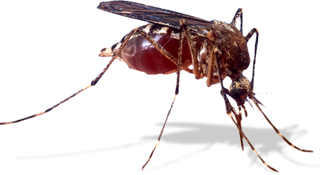
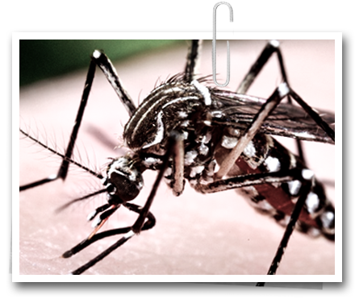
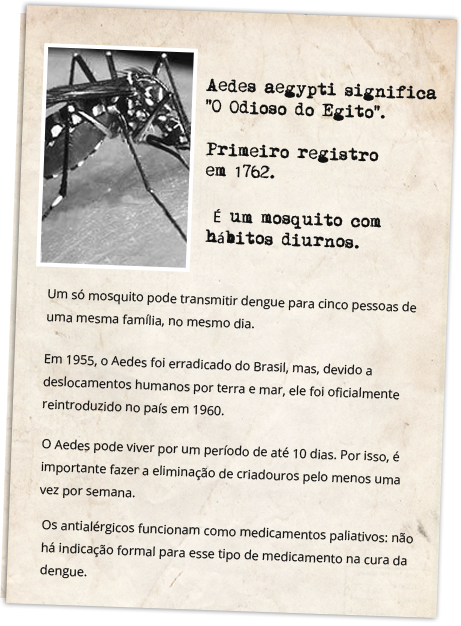
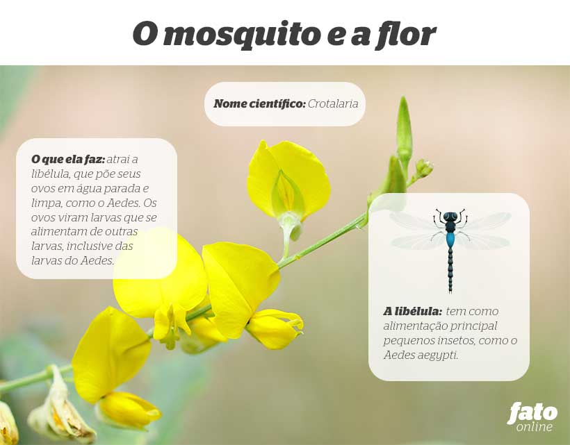

- 
-
 
-
Plantas que ajudam
Publicado em 16 de fev de 2016
A agrônoma Janine Camargo explica como utilizar plantas como repelentes contra o temido Aedes aegypti
-
Você sabe a diferença?
Fechar
Fechar
Fechar
-
Há registros na literatura médica de que o Zika vírus, causador da microcefalia, seja transmitido por vacinas vencidas?
Um mosquito pode infectar até cinco pessoas de uma mesma família, no mesmo dia?
É verdade que o Zika vírus já foi isolado no leite materno, mas não foi identificada transmissão pelo aleitamento?
Repelentes compostos por DEET, IR3535 ou Icaridin são os mais indicados?
Existem sintomas diferenciados das doenças transmitidas pelo Aedes em crianças, eles são os mesmos identificados nos adultos?
O mosquito gosta de seres humanos então meu pet está protegido das doenças transmitidas elo mosquito?
Mito
Não há registros na literatura médica de que o Zika vírus, causador da microcefalia, seja transmitido por vacinas vencidas.
Próximo >>Verdade
Um mosquito pode infectar até cinco pessoas de uma mesma família, no mesmo dia.
Próximo >>Mito
É verdade que o Zika vírus já foi isolado no leite materno, mas não foi identificada transmissão pelo aleitamento.
Próximo >>Verdade
Repelentes compostos por DEET, IR3535 ou Icaridin são os mais indicados.
Próximo >>Mito
Não existem sintomas diferenciados das doenças transmitidas pelo Aedes em crianças. Eles são os mesmos identificados nos adultos.
Próximo >>Verdade
O mosquito gosta de seres humanos então seu pet está protegido das doenças transmitidas elo mosquito.
- Voltar ao início - -
Ainda tem dúvidas?
-
Campanhas